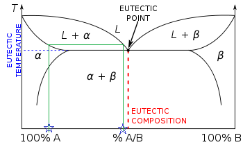

3.3 – Phase equilibriums¶
3.3.0 – Learning objectives¶
By the end of this notebook, you should be able to:
- Conceptually understand Solid-Liquid, Solid-Vapour and Liquid-Liquid Equilibrium.
- Identify which equilibrium is present in different processes.
- Utilize densities and fractional compositions of liquid-liquid mixtures to determine masses before and after separation.
- Understand the difference between the physical and chemical equilibrium cases for the 3 equilibrium cases.
3.3.1 – Introduction¶
In this section, we will be exploring phase equilibriums, chemical and physical properties and temperatures and pressures that allow the equilibrium to exist in chemical processes (e.g. boiling points, sublimation points). We will also be learning about chemical and physical properties of substances. We will also be factoring in the phase equilibriums in our balances for separation, such as in a distillation column.
3.3.2 – Solid-Liquid Equilibrium (melting and freezing)¶
Solid-Liquid Equilibrium, as a physical property of a substance, is the temperature and pressure at which a solid and a liquid can co-exist. This is usually the melting or freezing points of a substance.
At this stage, even when the heating is continued, the temperature does not change until the whole of solid is converted into liquid. The state when solid and liquid phases of a substance coexist is called solid-liquid equilibrium.
Since a solid is very hard to transport over a process, we usually melt it into liquid form and collect it as a precipitant at the end of the process.
3.3.3 – Solid-Liquid Equilibrium (solubility)¶
Solid-Liquid Equilibrium, as a chemical property of a solid substance, is the solubility of the solid substance. Solubility refers to the ability of a given solute to dissolve in a solvent.
It is measured in terms of the maximum amount of solute dissolved in a solvent at equilibrium. The resulting solution is called a saturated solution. Under various conditions, the equilibrium solubility can be exceeded to give a so-called supersaturated solution.
Case of Two Substances¶

Figure 1.
Attribution:By Dr. Báder Imre [ href=”http://creativecommons.org/publicdomain/zero/1.0/deed.en”>CC0], href=”https://commons.wikimedia.org/wiki/File%3AEutectic_phase_diagram_Tie_Line.png”>via Wikimedia Commons
Figure 1 is an solid-liquid equilibrium curve between a mixture of two substances. The mixture us lowest at \(T_E\), the equilibrium temperature for the mixture. This is where the two components exist in their individual liquid and solid states in equilibrium.
\(T_1\), \(T_2\) and \(T_3\) are all the melting temperatures of the mixture corresponding to different percent compositions of component A.
3.3.4 – Solid-Vapour Equilibrium¶
Solid-Vapour Equilibrium is the temperature and pressure point where a solid and a vapour can co-exist. The temperature and pressure point is called the sublimation point. A prime example of this equilibrium is dry ice, which is frozen carbon dioxide.
3.3.5 – Liquid-Liquid Equilibrium¶
In liquid-liquid equilibrium, the liquids can either be miscible, partially miscible or immiscible.
Miscible liquids are liquids that can mix together to form a single phase. If water and methyl isobutyl ketone (MIBK) are mixed at 25C, a single-phase results; otherwise, the mixture separates into two liquid phases, one of which contains 98% H2O and 2% MIBK and the other 97.7% MIBK and 2.3% H2O. Water and MIBK are examples of partially miscible liquids; they would be termed immiscible if one phase contained a negligible amount of water and the other a negligible amount of MIBK.
This principle of liquid-liquid equilibrium is used in liquid extraction. For example, acetone is soluble in both water and chloroform, but much more so in chloroform. If we wanted to separate a mixture of acetone and water, without using a separatory funnel, we might want to introduce chloroform to the mixture and find that the majority of the acetone will dissolve into the chloroform. Since chloroform and water are immiscible, we can then leave the mixture alone until they separate on their own.
Suppose the acetone is component C, and water is component A and chloroform component B. A and B are two nearly immiscible liquids and C is a solute distributed between the phases of an A–B mixture. The *distribution coefficient* of component C is the ratio of the mass fraction of C in the B phase to that in the A phase.
3.3.6 – Solid-liquid equilibrium example¶
One hundred kilograms of a saturated aqueous solution of \(AgNO_3\) at 100 °C is cooled to 20 °C, thereby forming \(AgNO_3\) solution, which is filtered from the remaining solution. The wet filter cake, which contains 80% solid crystals and 20% saturated solution by mass, is produced.
Calculate the mass of solid \(AgNO_3\) and \(H_2O\) in the fresh feed and in the wet filter cake.
The solubility of \(AgNO_3\) at 100 °C is 952g/100g \(H_2O\) and 222g/100g \(H_2O\) at 20 °C.
Step 1¶
Write out all assumptions:
- Basis: 100 kg
- Saturated solution of \(AgNO_3\) from 100 °C to 20 °C &rarr Change in solubility
Step 2¶
Draw a diagram

Figure 1.
Attribution: Victor Chiew Yung Hui & UBC [CC BY 4.0 de (https://creativecommons.org/licenses/by/4.0/)]
Step 3¶
Find the composition of the basis, filtrate and wet filter cake, and convert all units to a single, uniform unit. - Composition of 100 kg basis at 100 °C: - \(AgNO_3\) fraction = \(\frac{952 \space g}{100 \space g}\) = \(\frac{952 \space g}{100 \space g + 952 \space g}\) = \(0.905g \space AgNO_3\)
- $H_2O$ fraction = $1 \space - 0.905$ = $0.095g \space AgNO_3$
- Composition of filtrate and solution in wet filter cake at 20 °C
- \(AgNO_3\) fraction \(x_1\) = \(\frac{222 \space g}{100 \space g}\) = \(\frac{222 \space g}{100 \space g + 222 \space g}\) = \(0.689g \space AgNO_3\)
- \(H_2O\) fraction \(x_2\) = \(1 \space - 0.689\) = \(0.311g \space AgNO_3\)
- Composition of wet filter cake at 20 °C
- \(m_2\) = 0.8\((m_2 \space + \space m_3)\)
Step 4¶
Complete mass balances on the process, whichever is solvable
- \(H_2O\) balance: \((100kg \cdot 0.095)\) kg H2O = 0.311\(m_1\) + 0.311\(m_3\)
- \(m_2\) = 0.8\((m_2 \space + \space m_3)\)
- \(Total \space balance\) = \(100 \space kg\) = \(m_1 + m_2 + m_3\)
With these two equations, we can solve the masses.
- \(m_1\) = 12.904 \(kg/hr\)
- \(m_2\) = 69.677 \(kg/hr\)
- \(m_3\) = 17.419 \(kg/hr\)
Using the total stream masses and the fractional compositions, we can solve for the mass of \(AgNO_3\) and \(H_2O\) in the streams.
\(AgNO_3\) - Fresh feed stream: \(0.905 \space AgNO_3 \cdot 100 \space kg/hr\) = \(90.5 \space kg \space AgNO_3\) - Filtrate stream: \(0.689 \space AgNO_3 \cdot 12.904 \space kg/hr\) = \(8.9 \space kg \space AgNO_3\) - Wet filter cake mass: \(m_2 + m_3 \cdot x_1\) = \(69.677 \space + \space 0.689 \space AgNO_3 \cdot 17.419 \space kg/hr\) = \(81.6 \space kg/hr\)
\(H_2O\) - Fresh feed stream: \(0.095 \space H_2O \cdot 100 \space kg/hr\) = \(9.5 \space kg \space H_2O\) - Filtrate stream: \(0.311 \space H_2O \cdot 12.904 \space kg/hr\) = \(4.0 \space kg \space H_2O\) - Wet filter cake mass: \(m_3 \cdot x_2\) = \(0.311 \cdot 17.419 \space kg/hr\) = \(5.5 \space kg \space H_2O/hr\)
3.3.7 – Liquid-liquid equilibrium example¶
It is unlikely you will be tested on this in 241, but will come back to liquid-liquid equilibriums in extraction in 3rd year
Two hundred cubic centimeters of an acetone–water mixture that contains 10.0 wt% acetone is mixed with 300 \(cm^3\) of chloroform at 25 °C, and the phases are then allowed to settle. The densities of acetone, water and chloroform are 0.792 \(g/cm^3\), 1.000 \(g/cm^3\) and 1.489 \(g/cm^3\) respectively.
How much acetone, in kg, is transferred from the water to the chloroform?
Step 1¶
We need the density of the mixture to determine how much total mass of acetone-water mixture is present. We can use the densities of the individual components and frational composition of the mixture to estimate a density.
Step 2¶
Draw a diagram of the system.
Attribution: Victor Chiew Yung Hui & UBC [CC BY 4.0 de (https://creativecommons.org/licenses/by/4.0/)]
While this diagram is accurate, we need to be able to differentiate how much acetone is mixed with the chloroform and how much is still retained in the water. A more helpful diagram might be:
Attribution: Victor Chiew Yung Hui & UBC [CC BY 4.0 de (https://creativecommons.org/licenses/by/4.0/)]
Step 3¶
Determine the distribution coefficient
Step 4¶
Complete mass balances
\(Chloroform\)
\(Water\)
\(Acetone\)
Here is where we would use the distribution coefficient to determine the mass flow rates of \(m_1\) and \(m_3\).
In [ ]: